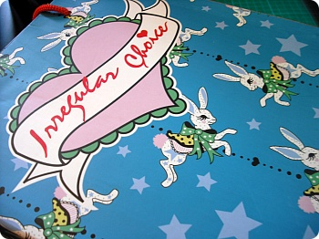
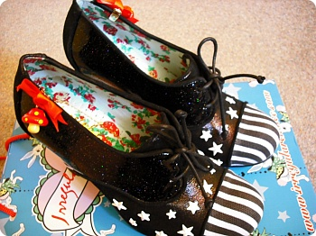
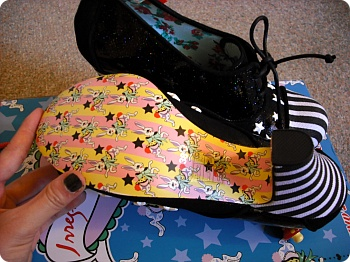

처음에 Carnaby st에서 가게구경하고
"우헤헤 신발디자인이 다 미쳤어~매우맘에들어"(←;;)
요러믄서 근처 놀러가게되믄 꼭 구경하러 들렀던곳^^;;;
디자인이 굉장히 과해서 지를까말까 망설였는데
그와중에 무난한거(?) 발견하고 낼름 구입//희희

죠 빨강버섯은 탈부착 가능한듯
처음 가게에서 봤을때는 빨간색이 훨 맘에들었는데
(오오 올블랙으로 옷입고 구두만 번쩍번쩍한 빨간색 좋았어!! 이러믄서;;)
막상신어보니 그 무지막지한 빨강빤짝이를 감당할 자신이없어서;;;;
결국 검은색으로 노선변경 소심합니다 녜;;;;

구두밑도 요래요래^^
여기 웹사이트 구두디자인 구경하는것만으로도 넘 잼난다능
과연 내가 이걸 일년에 몇번이나 신고나갈지는 아직 미지수지만
그건 우선 지르고 나서 고민하는겝니다 ^^;;;;;;